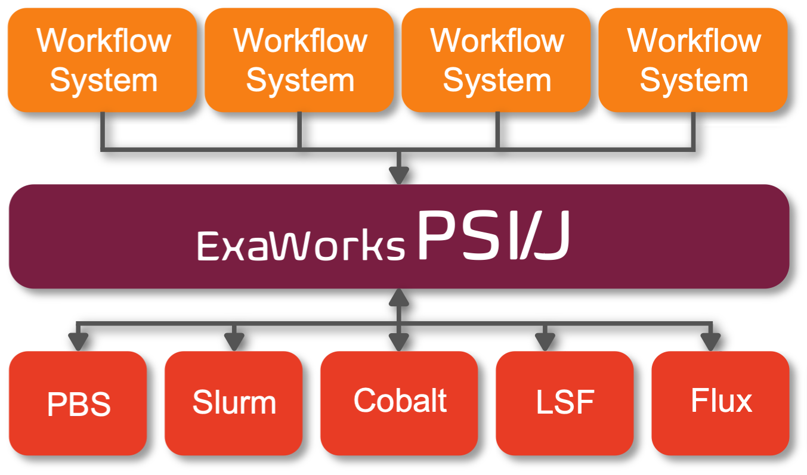

Portable Submission Interface for Jobs (PSI/J) - Python Library¶
PSI/J provides a modern unified API across different HPC schedulers, enabling your application to run virtually anywhere. Built by a team with decades of experience building workflow systems for large-scale computing, PSI/J automatically translates abstract job specifications into concrete scripts and commands to send to the scheduler. PSI/J has a number of advantages:
Runs entirely in user space. There’s no need to wait for infrequent deployment cycles, it’s easy to leverage built-in or commmunity-provided plug-ins.
Offers an asynchronous modern API for job management. PSI/J is a clean Python API for requesting and managing jobs that works across a variety of HPC centers.
Supports the common batch schedulers: We test PSI/J across multiple DOE supercomputer centers. It’s easy to test PSI/J on your systems and share the results with the community.
Is built by the HPC community, for the HPC community: PSI/J is based on a number of libraries used by state-of-the-art HPC workflow applications.
PSI/J is an open source project: We are establishing a community to develop, test, and deploy PSI/J across many HPC facilities.
Most HPC centers feature multiple schedulers, rolling policy changes and deployments of software stacks, and subtle differences even across systems with similar architectures. PSI/J is designed to tame this complexity and provide computational scientists and workflow developers a common API for interacting


{kind=link}